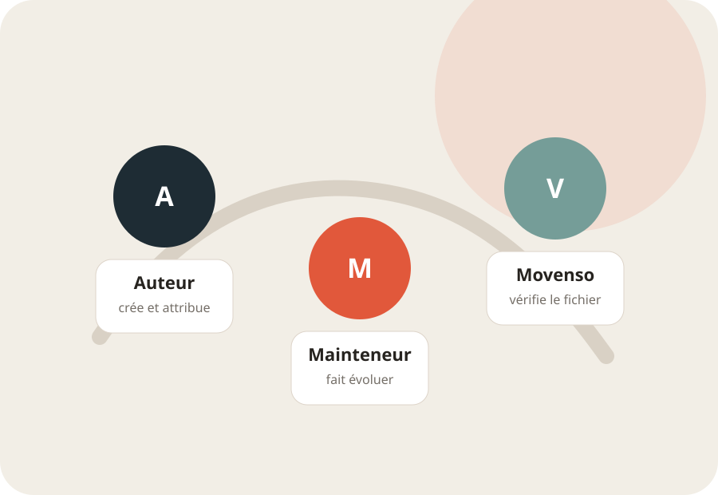

L’auteur
Décrit le périmètre du pack, son origine, sa licence et les contenus qu’il est autorisé à partager.
Communauté
Un pack peut être créé par un pratiquant, un enseignant ou un club, puis maintenu collectivement. Movenso héberge le fichier et son historique, pas une vérité pédagogique universelle.

Responsabilités
Décrit le périmètre du pack, son origine, sa licence et les contenus qu’il est autorisé à partager.
Corrige les erreurs, publie les versions suivantes et documente les changements importants.
Vérifie la compatibilité du fichier et la présence des informations minimales. Il ne certifie pas l’enseignement.
Publication
Pas de plateforme communautaire à administrer au départ. Une demande GitHub suffit pour proposer un fichier ou reprendre la maintenance d’un pack.
Discipline, langue, périmètre, auteur, licence et quelques lignes de description.
Le fichier doit s’importer dans la version courante de Movenso et ne pas contenir de médias redistribués sans droit.
Chaque nouvelle version conserve un numéro, une date et un résumé des changements.
Règles minimales
Chaque pack indique clairement son auteur ou son organisation, son mainteneur et la licence applicable. Les liens externes ne transfèrent aucun droit sur les ressources visées.
Un pack peut refléter une école, un club ou une manière de transmettre. Il ne doit pas être présenté comme officiel sans autorisation explicite de l’organisme concerné.
Les vidéos, images et documents inclus doivent être produits par l’auteur ou accompagnés d’un droit de redistribution. Un simple lien vers une ressource externe est préférable en cas de doute.
La vérification porte sur le format, la provenance déclarée et les risques évidents. Elle ne remplace pas une validation technique par un enseignant qualifié.